손목 위의 블랙박스
로리 맥길로이가 마스터즈에서 또 우승했다. 작년에도 우승했으니 백투백 우승이다. 타이거 우즈 이후 처음 나온 마스터즈 2연패라니, 진짜 역사를 쓴 셈이다. 이제 맥길로이는 잭 니클라우스나 닉 팔도, 타이거 우즈 같은 전설들과 어깨를 나란히 하게 됐다. 작년 2025년에 11년 만의 메이저 우승이자 커리어 그랜드슬램을 완성할 때 그 뭉클함과는 또 다른, 아주 진땀 나는 승부였다.
6타 차 리드를 잡고 시작했는데 막판에 셰플러한테 거의 다 잡힐 뻔했으니까. 심장이 쫄깃해지는 상황이었는데 결국 1타 차로 막아냈다. 그렇게 롤러코스터 같은 승부 끝에 우승을 확정 짓고 무릎을 꿇은 로리의 왼쪽 손목에 찬 초록색 밴드가 눈에 딱 들어왔다. 시계도 아니고 알림 뜨는 스마트워치도 아닌 그냥 띠 하나. 마스터즈라고 초록색으로 맞춘 것 같은데 저게 대체 뭐길래 저렇게 다들 차고 다니는 건지 궁금해졌다.

찾아보니 우프(Whoop)라는 피트니스 트래커였다. 르브론 제임스나 마이클 펠프스 같은 유명한 선수들 손목에도 죄다 찼다. 이게 좀 특이한 게 화면이 아예 없다. 시간도 안 나오고 스마트폰 알림도 안 온다. 오직 심박수나 수면 데이터 같은 것만 측정해서 매일 아침 오늘 몸 상태가 어떤지 점수로 알려준다. 오늘은 쉬어라 혹은 오늘 좀 달려도 된다 이렇게 코치해주는 셈이다. 원래 프로 선수들 쓰라고 나온 건데 요즘은 우리 같은 일반인들도 많이 차고 다닌다.
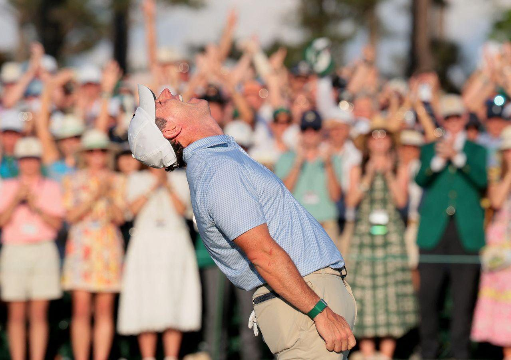
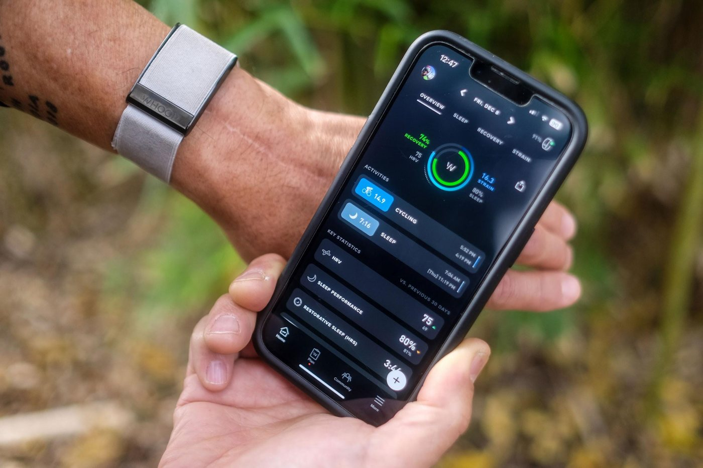
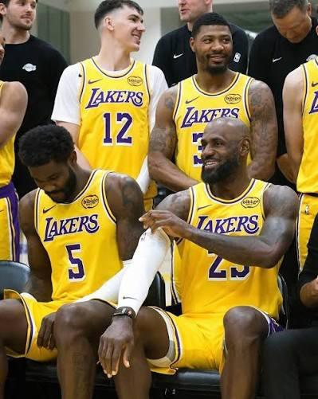
데이터가 일상이 된 시대
현대인들은 이제 이런 데이터에 꽤나 익숙하다. 사이클링이나 러닝 하는 사람들 보면 가민이나 스트라바 없이는 운동한 걸로 치지도 않고, 자기 데이터와 기록을 확인하는 게 일상이 돼버렸다. 예전에 황희찬 선수가 골 세레머니 할 때 유니폼 속에 입고 있던 조끼 보고 다들 신기해했는데, 그게 'EPTS(전자 성능 추적 시스템)'라는 거다. 등 뒤 주머니에 작은 GPS 칩을 넣어서 선수가 뛴 거리, 스프린트 횟수, 심박수 같은 걸 실시간으로 다 뽑아내는 기기다.
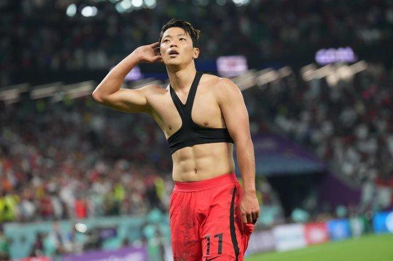
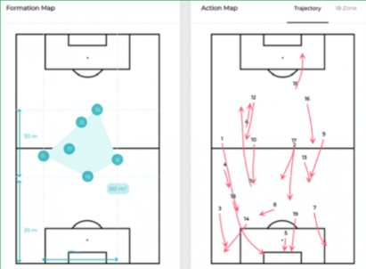
아무튼 이제는 프로, 아마추어 할 거 없이 동네 헬스장만 가도 스마트워치 하나씩은 다 차고 운동한다. 내 몸을 숫자로 보는 게 이제는 아주 자연스러운 일이 됐다.
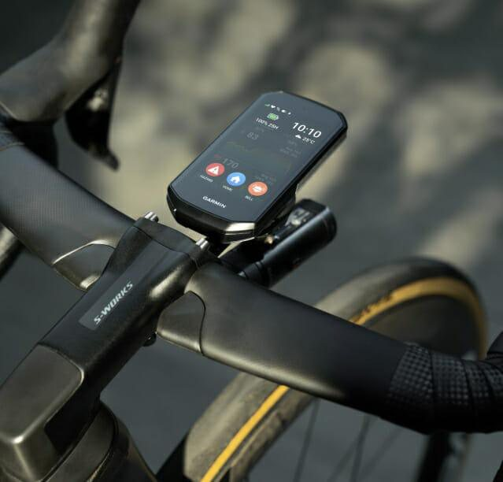
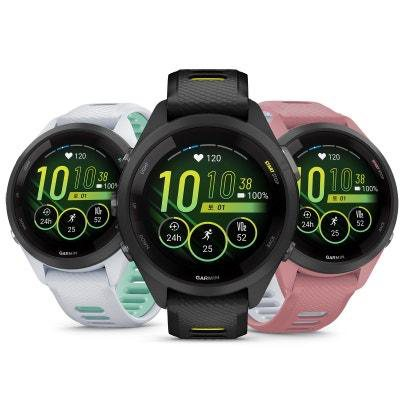
그래서, 나도 하나 샀다
그래서, 나도 얼마 전에 핏빗 에어(Fitbit Air)를 장만했다. 처음엔 스마트워치로 수면 데이터를 좀 제대로 보고 싶었으나, 막상 잠잘 때 손목에 커다란 걸 차고 자는 게 생각보다 꽤 불편해서 며칠 못 갔다. 반지로 바꿔볼까 하다가 결혼반지와 함께 끼기엔 너무 투머치인 것 같아서 패스했다. 그렇게 고민 끝에 밴드로 마음을 정했다. 미니멀한 디자인이라 미관을 크게 해치지 않고, 잠잘 때 차고 자도 전혀 거슬리지 않는다는 게 큰 장점이다. 결국 내 몸에 걸고, 차고, 쓰는 모든 하드웨어는 결국 '얼마나 자연스러운가'가 핵심인 듯하다.
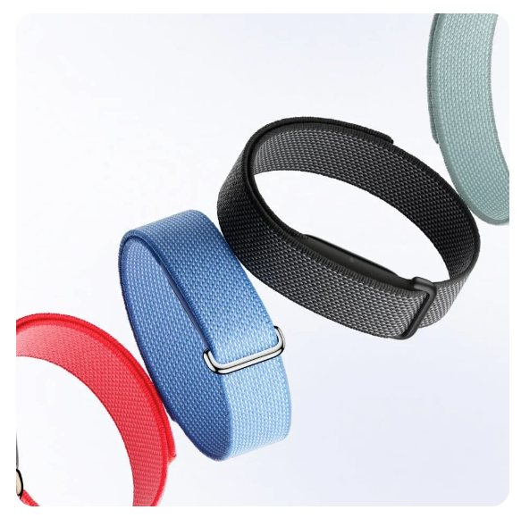
공짜 기기와 구독료의 셈법
구독 시장이 전쟁인 요즘, 로리가 쓰는 우프 같은 애들은 기기는 공짜로 주는 대신 매달 구독료를 엄청 받는다. (대략 25불로 구글의 약 2배.) 중요한 건 구독을 끊으면 기기가 그냥 고철이 된다. 근데 핏빗 에어는 그냥 189달러(싱가포르 기준) 내고 기기 사면 끝이다. 디테일한 데이터가 보고 싶다면 프리미엄을 구독하면 된다. 지금 사면 마켓마다 일정 기간 프리미엄 구독도 공짜로 주니까 상당한 이득이다. 구글이 우프 잡겠다고 작정하고 낸 물건인데, 구독 강제 없이 기기 값만 내면 프리미엄 서비스를 마음 편히 쓸 수 있다는 게 나 같은 소비자한텐 심리적 허들이 없어서 매력적이었다. 물론 써보고 결정할 수도 있고, 1년 뒤에 구글이 구독료를 어떻게 바꿀지는 모르겠지만, 일단 지금은 이게 제일 합리적인 선택 같았다.
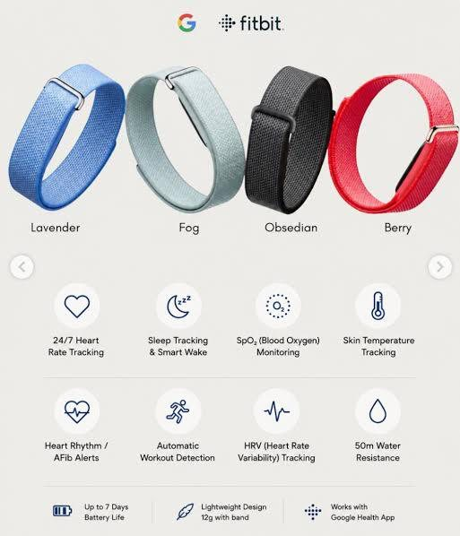
왜 다들 숫자에 집착하나
요새 사람들이 왜 이렇게 자기 몸 숫자에 집착하나 싶었는데 결국은 우리가 사는 세상이 그렇게 됐다. 건강이 화두인 것은 물론이고, 뭐든지 눈에 보이는 데이터나 기록이 선호된다. 다들 극도의 효율과 신뢰할 만한 걸 찾으니 말이다. 이런 피트니스 밴드는 건강 데이터를 기반으로 한 라이프스타일의 회복이 핵심인 듯하다. 맥길로이도 데이터로 자기 몸 보기 전까지는 자기가 맨날 과훈련 하는지도 몰랐다니까. 그냥 감으로 오늘 피곤하네 하는 거랑 어제보다 몸 상태가 안 좋으니 쉬어야겠네 하고 숫자로 확인하는 건 차원이 다르다.
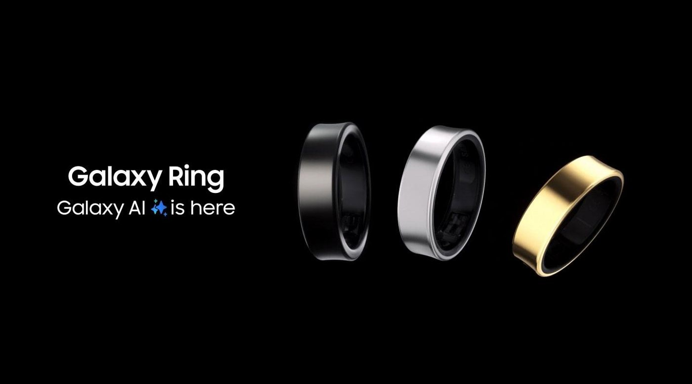
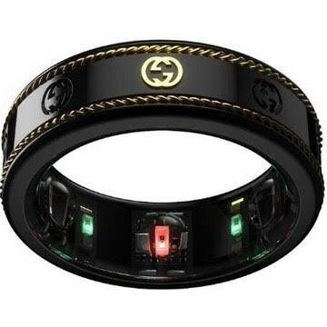
좋은 점, 그리고 불편한 점
물론 단점도 확실하다. 데이터에 너무 집착하다가 오히려 운동 흥미 잃는 경우를 주변에서 꽤 봤다. 숫자가 나를 도와야지 숫자가 나를 지배하면 안 되는 것처럼 말이다. 그리고 한국 사람들은 기기는 사도 매달 회비 내는 건 진짜 싫어한다. 갤럭시 링이나 이번 핏빗 에어 같은 모델이 한국에서 잘 먹히는 이유가 다 있다. 동남아 쪽은 또 분위기가 달라서 수요는 많은데 공식 유통이 아직 느려 터진 게 좀 답답하다는 건 공공연한 사실이다.
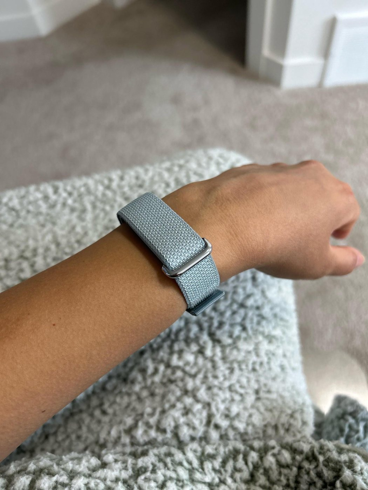
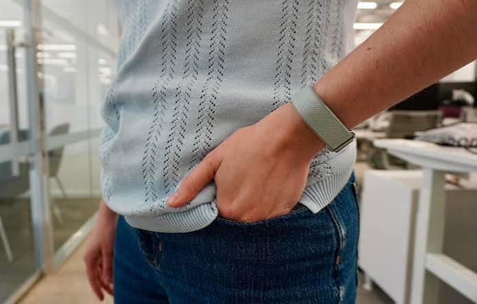
결국 도구다
어쨌든 핏빗 에어를 찬 지 얼마 안 됐지만 내 잠이 생각보다 엄청 엉망이라는 것부터 알게 된 건 소득이다. 모르고 무작정 하는 것보다는 알고 똑똑하게 하는 게 낫지 않겠나. 일단 이 작은 조약돌 같은 밴드랑 좀 더 친해져 볼 생각이다.
손목의 코치는 길을 알려준다. 걷는 건, 여전히 나다.